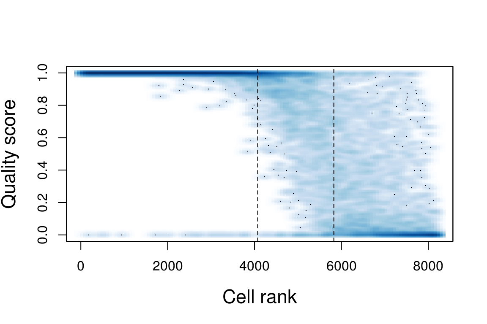
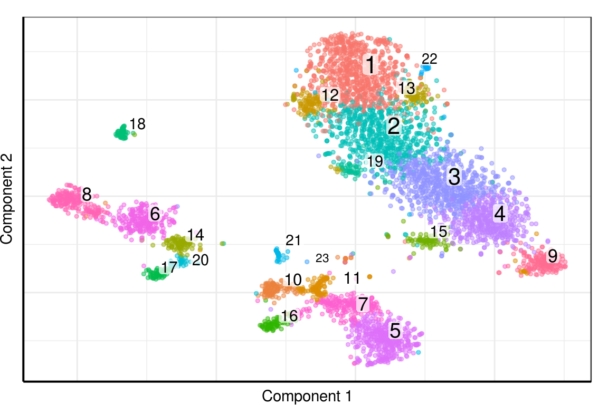
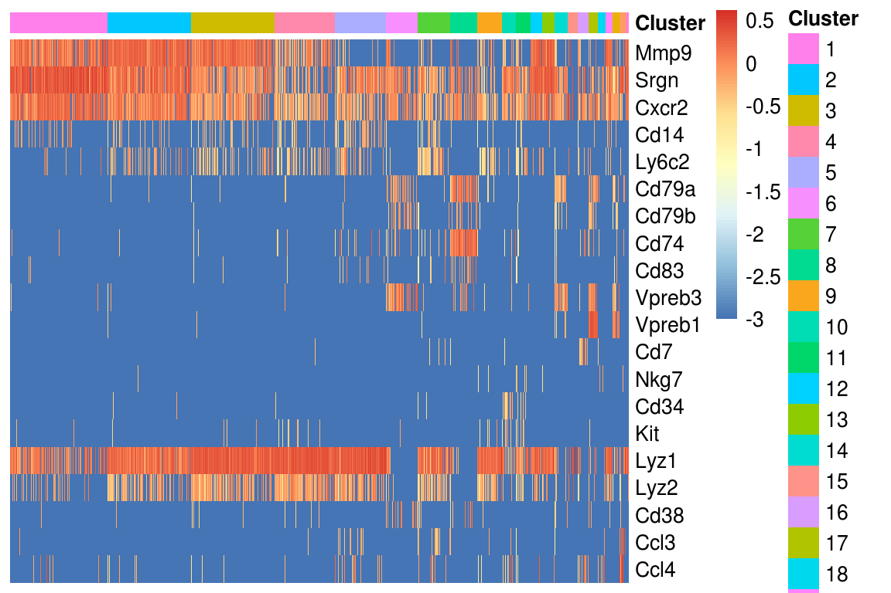
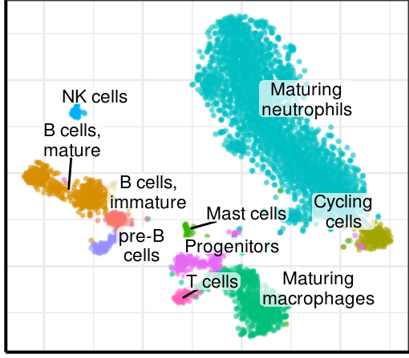
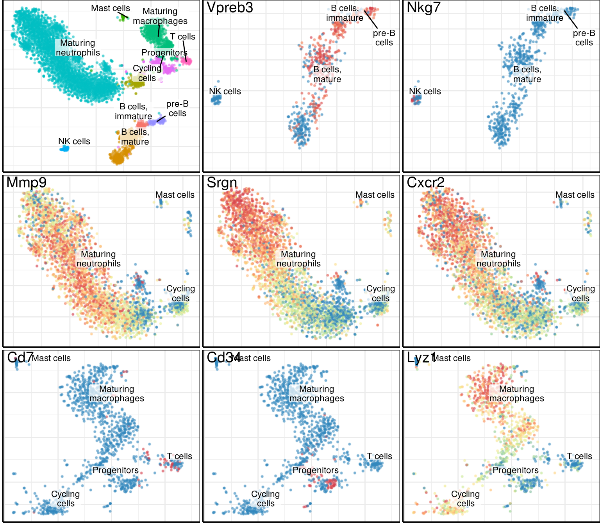

Source file: notebooks/annotation/annotation_bmc.Rmd
Last updated: 2018-03-09
Code version: b5e6a01
library(ggplot2)
library(ggrastr)
library(dplyr)
library(parallel)
library(reshape2)
library(pagoda2)
library(dropestr)
library(dropEstAnalysis)
theme_set(theme_bw() + theme_pdf(show.ticks=F, legend.pos=c(0, 1)))
set.seed(42)
kDataPath <- '../../data/'
kDropEstData <- paste0(kDataPath, 'dropest/SCG71/est_11_14_poisson_real/')
kAnnotationData <- paste0(kDataPath, 'annotation/')
kOutputPath <- '../../output/'holder <- readRDS(paste0(kDropEstData, 'SCG71.rds'))
est_cell_num <- dropestr::EstimateCellsNumber(holder$aligned_umis_per_cell)
real_cbs <- sort(holder$aligned_umis_per_cell, decreasing=T)[1:est_cell_num$expected] %>%
names()
scores <- ScorePipelineCells(holder, mit.chromosome.name='chrM', predict.all=T)
PlotCellScores(scores, cells.number=est_cell_num)
cm <- holder$cm_raw[, names(scores)[scores > 0.9]]
cm <- cm[Matrix::rowSums(cm > 0) > 10, ]
pgd <- GetPagoda(cm, n.cores=30, tsne.iter.num=5000)4810 cells, 11571 genes; normalizing ... using plain model winsorizing ... log scale ... done.
calculating variance fit ... using gam 208 overdispersed genes ... 208 persisting ... done.
running PCA using 1000 OD genes .... done
calculating distance ... pearson ...running tSNE using 30 cores:# clusters <- pgd$clusters$PCA$infomap
# write.csv(clusters, paste0(kAnnotationData, 'indrop_bmc_clusters.csv'))
clusters <- read.csv(paste0(kAnnotationData, 'indrop_bmc_clusters.csv'), row.names=1)
clusters <- setNames(clusters$x, rownames(clusters))
log_mtx <- log10(1e-3 + as.matrix(pgd$counts[names(clusters), ]))Pagoda embeding:
PlotClustering(pgd, clusters)
Heatmap for marker genes:
type_ids <- lst(
`Maturing neutrophils` = c(1:4, 12:13, 15, 19, 22),
`Maturing macrophages` = c(5, 7),
`Cycling cells` = c(9),
`B cells, mature` = c(6, 8),
`B cells, immature` = c(14),
`pre-B cells` = c(17, 20),
`T cells` = c(16),
`NK cells` = c(18),
`Mast cells` = c(21, 23),
`Progenitors` = c(10, 11)
)
heatmap_genes <- c(
'Mmp9', 'Srgn', 'Cxcr2',
'Cd14', 'Ly6c2',
'Cd79a', 'Cd79b',
'Cd74', 'Cd83',
'Vpreb3', 'Vpreb1',
'Cd7',
'Nkg7',
'Cd34', 'Kit',
'Lyz1', 'Lyz2',
'Cd38',
'Ccl3', 'Ccl4')
heatmap_clusters <- clusters
# heatmap_clusters <- heatmap_clusters[heatmap_clusters > 16]
PlotExpressionHeatmap(log_mtx, heatmap_clusters, heatmap_genes)
markers_df <- data.frame(
Type = c(
"Maturing neutrophils", "Maturing macrophages", "T cells",
"B cells", "B cells, mature", "B cells, immature", "pre-B cells",
"Progenitors", "NK cells"),
Markers = c(
"Mmp9, Srgn, Cxcr2", "Cd14, Ly6c2", "Cd7",
"Cd79a, Cd79b", "Cd74, Cd83", "Vpreb1", "Vpreb3",
"Cd34, Kit", "Nkg7")
)
markers_df$Clusters <- sapply(type_ids, paste, collapse=", ")[as.character(markers_df$Type)]
write.csv(markers_df[c('Type', 'Markers')],
paste0(kOutputPath, 'tables/annotation_bmc_markers.csv'), row.names=F)
markers_df| Type | Markers | Clusters |
|---|---|---|
| Maturing neutrophils | Mmp9, Srgn, Cxcr2 | 1, 2, 3, 4, 12, 13, 15, 19, 22 |
| Maturing macrophages | Cd14, Ly6c2 | 5, 7 |
| T cells | Cd7 | 16 |
| B cells | Cd79a, Cd79b | NA |
| B cells, mature | Cd74, Cd83 | 6, 8 |
| B cells, immature | Vpreb1 | 14 |
| pre-B cells | Vpreb3 | 17, 20 |
| Progenitors | Cd34, Kit | 10, 11 |
| NK cells | Nkg7 | 18 |
clusters_annotated <- AnnotateClusters(clusters, type_ids)write.csv(data.frame(Barcode=names(clusters_annotated),
Type=as.vector(clusters_annotated)),
paste0(kAnnotationData, 'indrop_bmc_clusters_annotated.csv'))raster_width <- 8 / 3
raster_height <- 7 / 3
raster_dpi <- 150
long_type_names <- c("Maturing neutrophils", "Maturing macrophages", "Cycling cells",
"B cells, immature", "B cells, mature", "pre-B cells")
for (type in long_type_names) {
clusters_annotated[clusters_annotated == type] <- stringi::stri_replace_last(type, "\n", regex=" ")
}
gg_annotation <- PlotClustering(pgd, clusters_annotated, lineheight=0.9, size=0.3,
raster=T, raster.width=raster_width,
raster.height=raster_height, raster.dpi=raster_dpi) +
theme_pdf(show.ticks=F) + ggpubr::rremove("xylab") +
scale_size_continuous(range=c(3, 3)) +
theme(plot.margin=margin())
gg_annotation
plot_mtx <- apply(log_mtx, 2, function(vec) scales::rescale(rank(vec)))metacluster_borders <- list(
b = c('Maturing macrophages', 'Progenitors', 'T cells', 'Mast cells'),
l = c('Maturing neutrophils', 'Cycling cells'),
r = c('NK cells', 'B cells, immature', 'B cells, mature', 'pre-B cells')
) %>%
lapply(BordersOfClusterUnion, clusters, type_ids, pgd$embeddings$PCA$tSNE)plot_genes <- c('Vpreb3', 'Nkg7', 'Mmp9', 'Srgn', 'Cxcr2', 'Cd7', 'Cd34', 'Lyz1')
plot_borders <- lapply(c("r", "r", "l", "l", "l", "b", "b", "b"),
function(n) metacluster_borders[[n]])
gene_plots <- mapply(function(g, b)
PlotGeneFraction(g, pgd, plot_mtx, limits=b, title.x=0.04, title.y=0.99,
legend.position="none", size=0.3,
class.label.layer=gg_annotation$layers[[3]],
raster=T, raster.width=8/3, raster.height=7/3, raster.dpi=150),
plot_genes, plot_borders, SIMPLIFY=F)
gg_fig <- cowplot::plot_grid(plotlist=c(list(gg_annotation), gene_plots), ncol=3)gg_fig
ggsave(paste0(kOutputPath, 'figures/supp_annotation_bmc.pdf'), width=8, height=7)# # Web app
# go_env <- p2.generate.mouse.go(pgd)
# pgd$testPathwayOverdispersion(setenv = go_env, verbose = T, correlation.distance.threshold = 0.9,
# recalculate.pca = F, min.pathway.size = 100, max.pathway.size = 1000)
#
# go_sets <- names(go_env) %>% setNames(names(go_env)) %>% lapply(function(x) {
# list(properties = list(locked = T, genesetname = x,
# shortdescription = GO.db::GOTERM[[x]]@Term), genes = c(go_env[[x]]))
# })
#
# de_sets <- get.de.geneset(pgd, groups = pgd$clusters$PCA$infomap, prefix = 'de_')
# go_sets <- c(go_sets, de_sets)
#
# additional_metadata <- list()
# additional_metadata$altCluster <- as.factor(clusters_annotated) %>%
# p2.metadata.from.factor(displayname='Annotated', s=0.7, v=0.8, start=0, end=0.5)
#
# pgd_web_object <- make.p2.app(pgd, dendrogramCellGroups = pgd$clusters$PCA$infomap,
# additionalMetadata = additional_metadata,
# geneSets = go_sets, show.clusters = T)
#
# # pgd_web_object$serializeToStaticFast(binary.filename = paste0(kEstFolder, 'bmmc1_pagoda_annotated.bin'))
# # saveRDS(pgd_web_object, paste0(kEstFolder, 'pagoda_annotation_web.rds'))
#
# show.app(pgd_web_object, "bmmc")| value | |
|---|---|
| version | R version 3.4.1 (2017-06-30) |
| os | Ubuntu 14.04.5 LTS |
| system | x86_64, linux-gnu |
| ui | X11 |
| language | (EN) |
| collate | en_US.UTF-8 |
| tz | America/New_York |
| date | 2018-03-09 |
| package | loadedversion | date | source | |
|---|---|---|---|---|
| 1 | AnnotationDbi | 1.32.3 | 2016-01-28 | Bioconductor |
| 2 | assertthat | 0.2.0 | 2017-04-11 | CRAN (R 3.4.1) |
| 3 | backports | 1.1.2 | 2017-12-13 | CRAN (R 3.4.1) |
| 5 | base64enc | 0.1-3 | 2015-07-28 | cran (@0.1-3) |
| 6 | bindr | 0.1 | 2016-11-13 | CRAN (R 3.4.1) |
| 7 | bindrcpp | 0.2 | 2017-06-17 | CRAN (R 3.4.1) |
| 8 | Biobase | 2.30.0 | 2016-01-28 | Bioconductor |
| 9 | BiocGenerics | 0.16.1 | 2016-01-28 | Bioconductor |
| 10 | bit | 1.1-12 | 2014-04-09 | CRAN (R 3.4.1) |
| 11 | bit64 | 0.9-7 | 2017-05-08 | CRAN (R 3.4.1) |
| 12 | blob | 1.1.0 | 2017-06-17 | CRAN (R 3.4.1) |
| 13 | brew | 1.0-6 | 2011-04-13 | CRAN (R 3.4.1) |
| 14 | Cairo | 1.5-9 | 2015-09-26 | CRAN (R 3.4.1) |
| 15 | clisymbols | 1.2.0 | 2017-05-21 | CRAN (R 3.4.1) |
| 16 | colorspace | 1.3-2 | 2016-12-14 | CRAN (R 3.4.1) |
| 18 | cowplot | 0.9.2 | 2017-12-17 | CRAN (R 3.4.1) |
| 20 | DBI | 0.7 | 2017-06-18 | CRAN (R 3.4.1) |
| 21 | dendsort | 0.3.3 | 2015-12-14 | cran (@0.3.3) |
| 22 | digest | 0.6.14 | 2018-01-14 | cran (@0.6.14) |
| 23 | dplyr | 0.7.4 | 2017-09-28 | CRAN (R 3.4.1) |
| 24 | dropEstAnalysis | 0.6.0 | 2018-03-09 | local (VPetukhov/dropEstAnalysis@NA) |
| 25 | dropestr | 0.7.6 | 2018-02-26 | local (@0.7.6) |
| 26 | evaluate | 0.10.1 | 2017-06-24 | CRAN (R 3.4.1) |
| 27 | ggplot2 | 2.2.1 | 2016-12-30 | CRAN (R 3.4.1) |
| 28 | ggpubr | 0.1.6 | 2017-11-14 | CRAN (R 3.4.1) |
| 29 | ggrastr | 0.1.5 | 2017-12-28 | Github (VPetukhov/ggrastr@cc56b45) |
| 30 | ggrepel | 0.7.0 | 2017-09-29 | CRAN (R 3.4.1) |
| 31 | git2r | 0.21.0 | 2018-01-04 | cran (@0.21.0) |
| 32 | glue | 1.2.0 | 2017-10-29 | CRAN (R 3.4.1) |
| 33 | GO.db | 3.2.2 | 2017-11-12 | Bioconductor |
| 37 | gtable | 0.2.0 | 2016-02-26 | CRAN (R 3.4.1) |
| 38 | highr | 0.6 | 2016-05-09 | CRAN (R 3.4.1) |
| 39 | htmltools | 0.3.6 | 2017-04-28 | CRAN (R 3.4.1) |
| 40 | igraph | 1.1.2 | 2017-07-21 | CRAN (R 3.4.1) |
| 41 | IRanges | 2.4.8 | 2016-09-15 | Bioconductor |
| 42 | irlba | 2.3.2 | 2018-01-11 | cran (@2.3.2) |
| 43 | KernSmooth | 2.23-15 | 2015-06-29 | CRAN (R 3.4.0) |
| 44 | knitr | 1.18 | 2017-12-27 | cran (@1.18) |
| 45 | ks | 1.11.0 | 2018-01-16 | local (VPetukhov/ks@NA) |
| 46 | labeling | 0.3 | 2014-08-23 | CRAN (R 3.4.1) |
| 47 | lattice | 0.20-35 | 2017-03-25 | CRAN (R 3.4.1) |
| 48 | lazyeval | 0.2.1 | 2017-10-29 | CRAN (R 3.4.1) |
| 49 | magrittr | 1.5 | 2014-11-22 | CRAN (R 3.4.1) |
| 50 | MASS | 7.3-47 | 2017-04-21 | CRAN (R 3.4.0) |
| 51 | Matrix | 1.2-12 | 2017-11-16 | CRAN (R 3.4.1) |
| 52 | mclust | 5.4 | 2017-11-22 | CRAN (R 3.4.1) |
| 53 | memoise | 1.1.0 | 2017-04-21 | CRAN (R 3.4.1) |
| 55 | mgcv | 1.8-22 | 2017-09-19 | CRAN (R 3.4.1) |
| 56 | munsell | 0.4.3 | 2016-02-13 | CRAN (R 3.4.1) |
| 57 | mvtnorm | 1.0-7 | 2018-01-26 | cran (@1.0-7) |
| 58 | nlme | 3.1-131 | 2017-02-06 | CRAN (R 3.4.0) |
| 59 | pagoda2 | 0.0.0.9002 | 2018-02-27 | local (hms-dbmi/pagoda2@NA) |
| 61 | pcaMethods | 1.60.0 | 2017-11-12 | Bioconductor |
| 62 | pcaPP | 1.9-73 | 2018-01-14 | cran (@1.9-73) |
| 63 | pheatmap | 1.0.8 | 2015-12-11 | CRAN (R 3.4.1) |
| 64 | pkgconfig | 2.0.1 | 2017-03-21 | CRAN (R 3.4.1) |
| 65 | plyr | 1.8.4 | 2016-06-08 | CRAN (R 3.4.1) |
| 66 | R6 | 2.2.2 | 2017-06-17 | CRAN (R 3.4.1) |
| 67 | RColorBrewer | 1.1-2 | 2014-12-07 | CRAN (R 3.4.1) |
| 68 | Rcpp | 0.12.15 | 2018-01-20 | cran (@0.12.15) |
| 69 | reshape2 | 1.4.3 | 2017-12-11 | CRAN (R 3.4.1) |
| 70 | rjson | 0.2.15 | 2014-11-03 | CRAN (R 3.4.1) |
| 71 | rlang | 0.1.4 | 2017-11-05 | CRAN (R 3.4.1) |
| 72 | rmarkdown | 1.8 | 2017-11-17 | CRAN (R 3.4.1) |
| 73 | Rook | 1.1-1 | 2014-10-20 | CRAN (R 3.4.1) |
| 74 | rprojroot | 1.3-2 | 2018-01-03 | cran (@1.3-2) |
| 75 | RSQLite | 2.0 | 2017-06-19 | CRAN (R 3.4.1) |
| 76 | Rtsne | 0.14 | 2017-11-12 | Github (jkrijthe/Rtsne@1d0f926) |
| 77 | S4Vectors | 0.8.11 | 2016-01-30 | Bioconductor |
| 78 | scales | 0.5.0 | 2017-08-24 | CRAN (R 3.4.1) |
| 79 | sessioninfo | 1.0.0 | 2017-06-21 | CRAN (R 3.4.1) |
| 82 | stringi | 1.1.6 | 2017-11-17 | CRAN (R 3.4.1) |
| 83 | stringr | 1.2.0 | 2017-02-18 | CRAN (R 3.4.1) |
| 84 | tibble | 1.3.4 | 2017-08-22 | CRAN (R 3.4.1) |
| 86 | triebeard | 0.3.0 | 2016-08-04 | cran (@0.3.0) |
| 87 | urltools | 1.7.0 | 2018-01-20 | cran (@1.7.0) |
| 89 | withr | 2.1.1 | 2017-12-19 | cran (@2.1.1) |
| 90 | yaml | 2.1.16 | 2017-12-12 | CRAN (R 3.4.1) |
This R Markdown site was created with workflowr